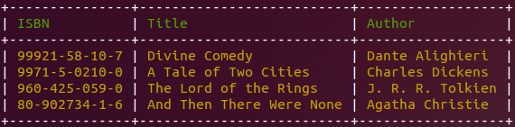

Nuevo en la versión 2.3: El ayudante table se añadió en Symfony 2.3.
Cuándo construyes una aplicación de consola puede ser útil mostrar datos tabulares:
Para mostrar una tabla, usa la clase Symfony\Component\Console\Helper\TableHelper, establece las cabeceras, filas y dibújala:
$table = $app->getHelperSet()->get('table');
$table
->setHeaders(array('ISBN', 'Title', 'Author'))
->setRows(array(
array('99921-58-10-7', 'Divine Comedy', 'Dante Alighieri'),
array('9971-5-0210-0', 'A Tale of Two Cities', 'Charles Dickens'),
array('960-425-059-0', 'The Lord of the Rings', 'J. R. R. Tolkien'),
array('80-902734-1-6', 'And Then There Were None', 'Agatha Christie'),
))
;
$table->render($output);
El diseño de la tabla se puede personalizar también. Hay dos maneras para personalizar la representación de la tabla: Utilizando diseños nombrados u opciones de representación personalizadas.
El ayudante table viene con dos diseños de tabla preconfigurados:
Puedes configurar el diseño utilizando el método setLayout().
También puedes controlar cómo se dibuja la tabla poniendo los valores de la opción de dibujo: